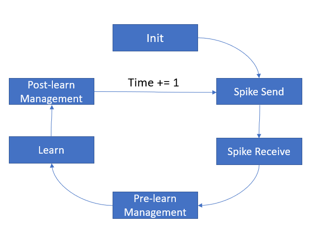

TF Executor¶
- class lava.core.tf.executor.TfExecutor(executables: List[lava.core.generic.executable.AbstractProcessExecutable], var_map: Dict[lava.core.generic.variable.AbstractVar, lava.core.generic.variable.AbstractExecVar], time_series_map: Dict[lava.core.generic.variable.AbstractVar, lava.core.generic.probing.AbstractTimeSeries])¶
Executor for running processes on TF backend.
- advance_phase() None¶
Advances the system phase and time of the the runtime according to the following state machine:

- print_processes()¶
Prints a list of all all processes including name, type, class and during which phases each executes. ‘type’ is either L (for leaf process) or H (for hierarchical process).
- run(num_steps: int, **kwargs)¶
Executes all phases of given process sequentially <num_steps> times.
Inputs: :param int num_steps: Number of time steps to run for. :param bool eagerly: Run TF in eager mode. :param int performance: Measure performance. Interval of time steps where execution time should be printed. Usually this aligns with the time steps of one iteration of a task.